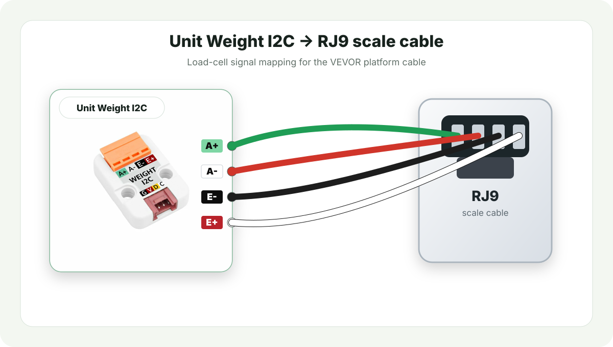
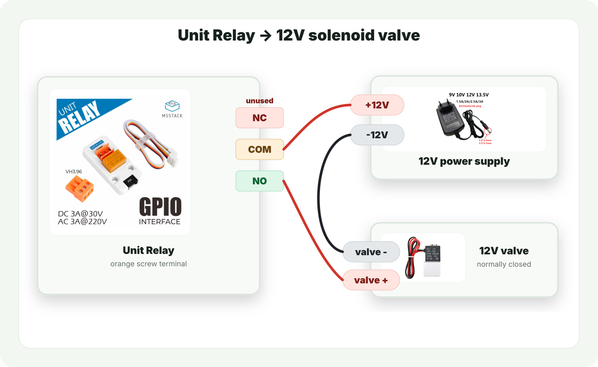

Outils
Tournevis, perceuse, forets adaptés au boîtier, pince coupante et pince à dénuder.
Assemblage matériel
Liste des pièces et schémas de cablage
L'objectif est d'obtenir une balance propre, robuste, sans câble exposé, adaptée aux environnements de brassage.
Tournevis, perceuse, forets adaptés au boîtier, pince coupante et pince à dénuder.
Fil souple, connecteurs jack, presse-étoupes PG7 et câble RJ9 pour la plateforme.
Travaillez alimentation débranchée. Vérifiez la polarité 12 V avant de connecter le Dial ou la vanne.
Après assemblage, utilisez le guide logiciel pour flasher le firmware et calibrer la balance.

Le M5Stack Dial apporte l'ESP32, le Wi-Fi, l'écran rond et l'encodeur rotatif. Il limite le câblage et donne au brasseur une interface physique utilisable même avec les mains humides.

L'Unit Weight I2C convertit le signal des capteurs de charge en données lisibles par le Dial. Gardez le câblage court et protégé mécaniquement dans le boîtier.


Le câble RJ9 évite de câbler directement les capteurs de charge de la balance. Il permet de connecter simplement la plateforme de pesage au lecteur de poids Unit Weight I2C.
Ajoutez ces pièces uniquement si vous utilisez le remplissage de keg.

L'Unit Relay pilote la vanne solénoïde 12 V optionnelle pour le remplissage de keg, tout en séparant le signal de contrôle du circuit de puissance de la vanne.

La spunding valve est uniquement nécessaire pour le remplissage de keg. Elle reste le régulateur mécanique de pression pendant que la balance contrôle l'arrêt du remplissage au poids.

La vanne solénoïde normalement fermée donne au contrôleur un moyen sûr d'arrêter le remplissage. En cas de perte d'alimentation, le passage du gaz se ferme.


Le boîtier regroupe l'électronique, protège les connexions et ne laisse sortir que les câbles utiles.

Le presse-étoupe assure le maintien mécanique du câble RJ9 et aide à éloigner les projections de l'électronique dans le boîtier.

Les connecteurs jack facilitent la déconnexion de l'alimentation et de la vanne optionnelle pour la maintenance ou le transport.

L'alimentation 12 V alimente le montage et correspond à la tension de la vanne solénoïde utilisée par l'option de remplissage de keg.
Positionnez le M5Stack Dial pour que l'écran et l'encodeur rotatif restent accessibles. Marquez ensuite les sorties nécessaires : alimentation 12 V, câble RJ9 de la balance et sortie de vanne si le keg filler est installé.
Faites passer le câble RJ9 dans le boîtier via un presse-étoupe, puis connectez-le au lecteur de poids Unit Weight I2C.

| Borne Unit Weight | Fil du câble RJ9 |
|---|---|
A+ |
Vert |
A- |
Rouge |
E- |
Noir |
E+ |
Blanc |
Reliez le port A rouge du M5Stack Dial au connecteur Grove du Unit Weight I2C avec le câble HY2.0-4P. Ce port fournit l'alimentation 5 V et le bus I2C nécessaire au lecteur de poids.
| Fil Grove | Port A du M5Stack Dial | Unit Weight I2C |
|---|---|---|
| Noir | GND |
GND |
| Rouge | 5V |
5V |
| Jaune | G13 / SDA |
SDA |
| Blanc | G15 / SCL |
SCL |
0x26.
L'alimentation 12 V 3 A est l'entrée principale. Utilisez des connecteurs jack pour une entrée propre, puis distribuez l'alimentation aux modules qui en ont besoin.
Pour le remplissage de keg, le relais pilote la vanne solénoïde 12 V normalement fermée. Si le système perd l'alimentation ou redémarre, la vanne revient en position fermée et le remplissage s'arrête.

Reliez le port B noir du M5Stack Dial au connecteur Grove du Unit Relay avec le câble HY2.0-4P. Ce port fournit l'alimentation 5 V et le signal de commande du relais.
| Fil Grove | Port B du M5Stack Dial | Unit Relay |
|---|---|---|
| Noir | GND |
GND |
| Rouge | 5V |
5V |
| Jaune | G2 |
DIN |
| Blanc | G1 |
NC |